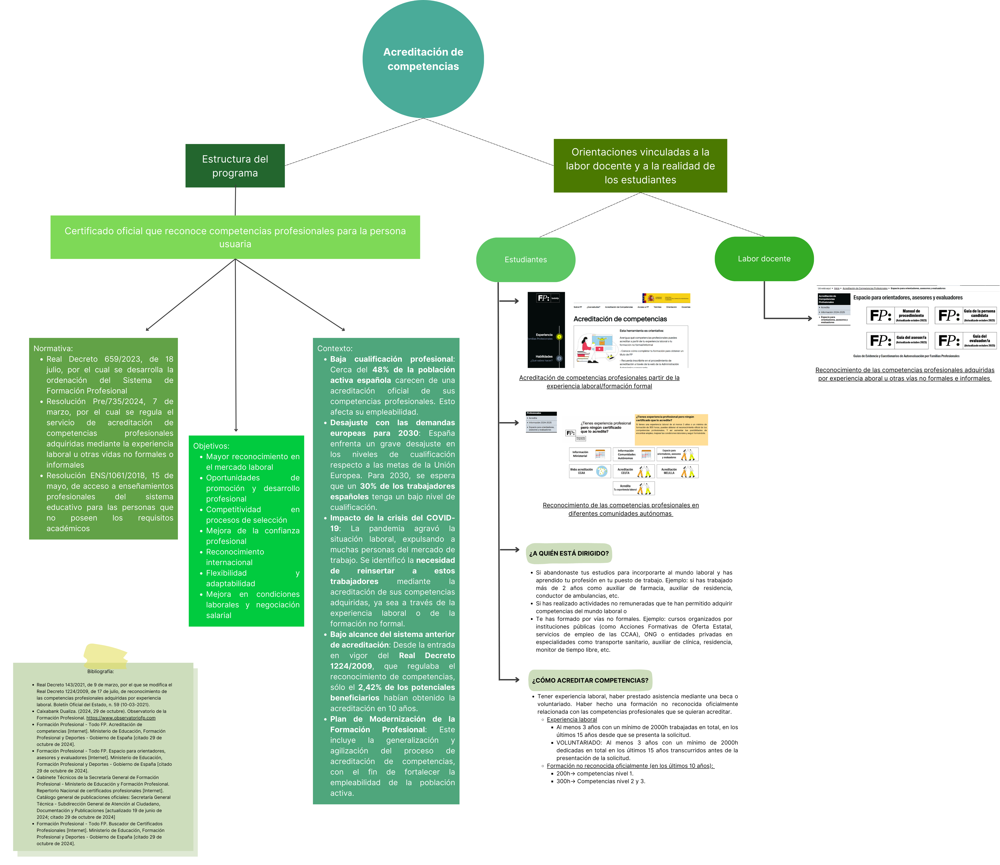
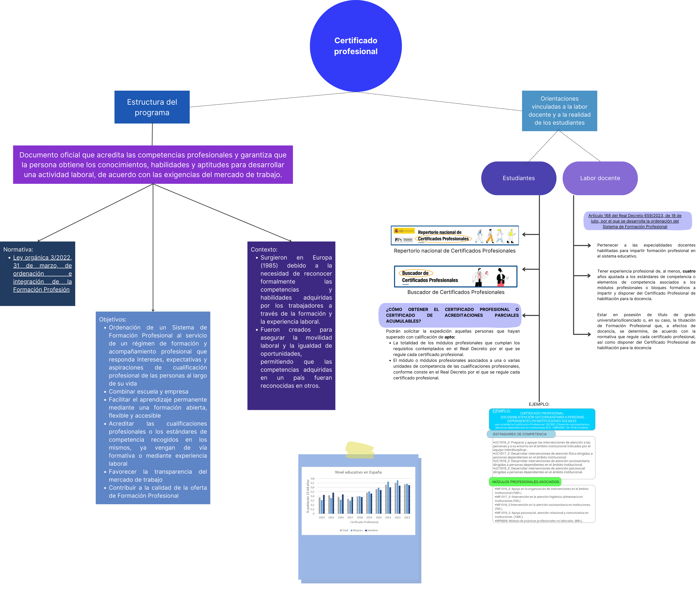

Soc l’Ainoa Moran Perez, Infermera des de fa 15 anys. Primer començaré explicant com vaig descobrir la vocació a la infermeria i després com va seguir la curiositat de ser docent. Abans de cursar batxillerat jo volia fer medicina. Spoiler alert, la meva nota de batxillerat i selectivitat no arribava per entrar en aquesta carrera, però sí per entrar a Infermeria. A més a més, a l’Escola d’Infermeria que vaig escollir com a primera opció, aquesta per recomanació d’una amiga. Vaig tenir molt bona experiència a la carrera i vaig tenir molta sort durant tots els períodes de pràctiques, que eren bastants. Vaig començar a treballar com a infermera i vaig descobrir que realment allò era la meva vocació i que en comptes d'intentar entrar a medicina jo volia formar-me més i millor en aquesta professió. L'experiència de portar alumnes durant la meva pràctica com a Infermera, des del primer moment ha estat molt enriquidora i també la gaudia més quan més em formava i així podia proporcionar un bon ensenyament durant la pràctica als meus alumnes.
Va ser així que ja durant els meus primers anys de carrera professional em vaig plantejar com a meta de futur la decència. Després de tres anys fent contractes de dies, vacances d’estiu i baixes indeterminades vaig decidir continuar la meva carrera d’infermera a l'estranger. Allà vaig poder tenir l'oportunitat d'entrar en un equip de l'hospital on ja treballava, que a més a més de fer feina assistencial en el nostre rol, també estava la tasca de fer petits tallers de formació d'Infermeria respiratòria a les nostres companyes de planta. Cal recalcar que aquesta part de la meva carrera m'ha agradat moltíssim. Quan pensava a tornar a viure aquí a Espanya pensava com introduir-me en la docència, el meu pare és professor de Cicles formatius, ara retirat, i ell sempre m’ha animat a buscar la manera de poder formar en l'FP. La combinació d'una professió que conec arran de la carrera del meu pare, aquesta sempre molt ben valorada per ell mateix, i l'experiència gratificant d'ensenyar durant la meva pràctica d’infermera és el que m’ha portat a fer aquest màster. Ara que he fet un canvi de país he tingut la sort de ser acceptada al màster de Secundària, i per mi és una oportunitat de canvi i tot un repte.
Següent: Modernització FPLa Formació Professional (FP) a Espanya té les seves arrels en el segle XIX, un període en què la industrialització i les noves demandes laborals van impulsar la necessitat d'un sistema educatiu enfocat en la preparació tècnica. Amb la promulgació de la Llei de Formació Professional Industrial el 1955, es va establir una estructura educativa més reglada per a l'FP. Aquesta llei reflectia la necessitat d'una mà d'obra més qualificada en un context de creixement industrial i canvis econòmics. La dècada de 1970 va portar una reforma educativa significativa amb la Llei General d'Educació, que va establir l'FP en tres nivells: Primer Grau, Segon Grau i Tercer Grau. Aquesta estructura buscava integrar l'FP en el sistema educatiu general, millorant la seva qualitat i adaptant-la a les necessitats del mercat laboral. Malgrat els avenços, l'FP a Espanya encara afrontava reptes importants en termes d'infraestructura, finançament i percepció social. La dècada de 1980 va veure l'inici de noves propostes per reconfigurar el sistema educatiu, amb una atenció especial a l'FP, destacant la necessitat de millorar la seva connexió amb el mercat laboral i l'adaptació a les normatives europees. Aquest període de desenvolupament va assentar les bases per al procés de modernització de l'FP. (Ministerio de Educación y Formación Profesional, s. d.; Consejería de Educación de Murcia, 2003)
El Pla de Modernització de la Formació Professional a Espanya, presentada el juliol de 2020, té com a objectiu principal transformar l’FP en una eina clau per al creixement econòmic i social, millorant l'ocupabilitat i adaptant-se a les necessitats del mercat laboral actual. Es busca ajustar les qualificacions professionals a les necessitats del mercat laboral, augmentant l'ocupabilitat i la competitivitat de les empreses. (Ministerio de Educación y Formación Profesional, 2024)
Estudis sobre el futur del treball i l'educació després de la pandèmia de la COVID, conduïts per l'Organització Internacional del Treball (OIT) i l'Organització per a la Cooperació i el Desenvolupament Econòmics (OCDE). Afirman que la Formació Professional (FP) i l'FP Dual són essencials per millorar l'ocupabilitat en un mercat laboral transformat per la COVID-19, i L'OCDE destaca que els països més efectius en reduir l'atur juvenil són aquells que tenen programes d’FP de qualitat (EPALE, s. d.).
L'Informe Anual 2024 de l'Observatori de la Formació Professional (2024) a Espanya ofereix una anàlisi detallada de l'estat actual i les tendències de l’FP al país.
Els punts esmentats anteriorment sobre l’informe Anual del 2024 són similars als 2 anys anteriors.
Amb el Pla de Modernització de l’FP s'estableix un procediment permanent per al reconeixement i acreditació de les competències professionals adquirides mitjançant l'experiència laboral, amb l'objectiu d'acreditar fins al 2023 les competències del 40% de la població activa menor de 55 anys que no disposava de titulació. Des de la seva publicació en 2020, el pla comptava amb una inversió de 1.500 milions d'euros en quatre anys, la major quantitat destinada fins ara a l'FP a Espanya. Amb això es preveia la creació de 200.000 noves places d'FP fins al 2023 per respondre a la creixent demanda i a les necessitats formatives del mercat laboral. Tot i els avenços, la desigualtat en l'accés a l’FP continua sent un desafiament. Factors com la localització geogràfica, el nivell socioeconòmic i les diferències culturals influeixen en la participació i l'èxit dels estudiants en l’FP com es pot veure a l'informe anual esmentat anteriorment (Ministerio de Educación y Formación Profesional, 2024).
En el pla de Modernització s'implementa una oferta modular d’FP que permet als estudiants matricular-se en un o diversos mòduls segons les seves necessitats educatives i laborals, sense haver de cursar tots els que integren un títol o un curs d'especialització millorant la flexibilitat i l’accessibilitat a l’FP. Promou una estreta col·laboració entre el sector públic i privat, reconeixent que una FP de qualitat requereix la implicació activa de les empreses. Això hauria de promoure la implantació de l’FP dual, que combina l'ensenyament en centres educatius amb la formació en empreses (Ministerio de Educación y Formación Profesional, 2022).
La Formació Professional Dual (FP Dual) s'ha consolidat com una opció formativa clau a Espanya, combinant la formació acadèmica amb pràctiques reals en empreses. Ha estat un dels principals focus de modernització, ja que aquesta modalitat ofereix múltiples beneficis, tant per als estudiants com per a les empreses, i ha estat objecte d'anàlisi en documents com "Conoce la FP Dual. Una mirada desde la orientación" de la Fundació Bertelsmann, publicat el gener de 2022 (Ref 7) . L'FP Dual millora significativament les oportunitats d'ocupació dels joves, ja que els prepara amb competències pràctiques adaptades a les necessitats reals del mercat laboral. Els estudiants que completen programes d'FP Dual mostren taxes més altes d'inserció laboral en comparació amb altres vies formatives. Aquest model fomenta una estreta col·laboració entre el sector educatiu i el món laboral, permetent una formació alineada amb les necessitats empresarials i tecnològiques actuals. Per això la implicació de les empreses en el procés formatiu és fonamental per a l'èxit de l'FP Dual. Tot i el seu èxit creixent, l'FP Dual a Espanya encara enfronta alguns reptes. El primer sent la desigualtat en l'oferta entre regions, l'accés a l'FP Dual pot variar significativament entre comunitats autònomes, amb algunes regions oferint més opcions i suport que altres. I la segona sent la percepció social que pot ser una segona opció respecte a l'educació universitària. Tot i els seus beneficis, l'FP Dual encara lluita contra la percepció que pot ser una opció "segona" en comparació amb l'educació universitària (Fundación Atresmedia, 2018).
A escala europea, models com els d'Alemanya i Suïssa són referents per a la implantació de l'FP Dual, destacant per la seva eficàcia en la reducció de l'atur juvenil i la preparació de professionals qualificats. El Centre Europeu per al Desenvolupament de la Formació Professional (CEDEFOP) és un organisme de la Unió Europea que contribueix a la promoció i al desenvolupament de la formació professional (FP) a Europa. El CEDEFOP proporciona dades, anàlisis i recomanacions sobre l'FP per ajudar els estats membres a adaptar les seves polítiques educatives i laborals a les necessitats del mercat. En l'àmbit europeu, s'observa una tendència cap a la integració de l'FP en els sistemes educatius nacionals i la seva adaptació a les noves demandes del mercat laboral, especialment en sectors tecnològics i digitals. Els informes del CEDEFOP també destaquen que l'FP dual és clau per millorar l'ocupabilitat i reduir l'atur juvenil (Cedefop, 2022).
La realitat europea de l'FP, amb el suport del CEDEFOP, ofereix un marc per a la millora contínua de la formació professional a Espanya als estàndards europeus, promovent la mobilitat i el reconeixement mutu de qualificacions professionals. Els models de referència i les lleis i normatives actuals impulsen un sistema educatiu més competitiu i alineat amb les necessitats globals, assegurant que l'FP continuï sent una via clau per al desenvolupament personal i professional (Cedefop, 2022).
El Pla de Modernització de l'FP inclou l’ampliació de l'oferta de titulacions relacionades amb la digitalització i les noves tecnologies, incloent-hi títols com Fabricació Intel·ligent, Digitalització del Manteniment Industrial, Ciberseguretat en Entorns de Producció, entre d'altres. La quarta revolució industrial ha transformat el mercat laboral, requerint noves competències digitals i tecnològiques. L'FP a Espanya ha començat a incorporar aquests canvis en els seus currículums, requerint noves competències digitals i tecnològiques, però encara hi ha un camí per recórrer per assegurar que tots els estudiants rebin una formació que respongui a les demandes actuals del mercat laboral. El professorat té un paper fonamental en aquest procés, ja que la formació contínua per part dels mateixos docents i l’adaptació a noves tecnologies i metodologies és essencial per a l'èxit de la modernització de l'FP. Això requereix una combinació d'aprenentatge continu, suport institucional i un canvi en la cultura educativa per fomentar la innovació i l'acceptació de noves tecnologies. En aquest context, les institucions educatives han de jugar un paper proactiu en la formació i el suport al professorat per assegurar que l'ensenyament respongui de manera efectiva a les demandes del futur mercat laboral (Ministerio de Educación y Formación Profesional, 2022).
En el Pla de modernització es destaca l'augment de la matriculació en FP, amb un total de 861.906 estudiants en el curs 2019-2020, reflectint una tendència ascendent en els darrers anys. El perfil dels estudiants d'FP ha evolucionat amb el temps, ja que actualment hi ha una major diversitat en termes d'edat, experiència prèvia i objectius professionals. No obstant això, cal treballar per fer l'FP més accessible i atractiva per a tots els segments de la població, especialment per aquells en risc d'exclusió social (Ministerio de Educación y Formación Profesional, 2022).
La modernització de l'FP a Espanya és un procés complex que requereix un enfocament integral, abordant desigualtats, digitalització, i adaptació als models europeus d'èxit. El diàleg constant amb tots els agents implicats és fonamental per assegurar que l'FP continuï sent una via educativa i professional atractiva per a tots els ciutadans.
Següent: Agència FP CatalunyaL'Agència Pública de Formació i Qualificació Professionals de Catalunya (FPCAT), creada mitjançant la Llei 10/2015 del 19 de juny, és l'entitat encarregada de gestionar i coordinar la formació professional (FP) a Catalunya. Aquesta institució té com a missió integrar la Formació Professional Inicial, vinculada al sistema educatiu, i la Formació Professional per a l'Ocupació, que inclou tant la formació ocupacional com la contínua. L'objectiu principal de la FPCAT és proporcionar una oferta formativa coherent i adaptada a les necessitats del mercat laboral (FPCAT, 2015).
La Llei 10/2015, del 19 de juny, regula la formació i qualificació professionals a Catalunya amb l'objectiu d'integrar la formació professional inicial i per a l'ocupació, adaptant-la a les necessitats del mercat laboral. Aquesta llei estableix un sistema únic i coordinat que facilita l'accés, la qualificació i l'actualització contínua dels professionals, promovent la qualitat, la inclusió i el reconeixement de les competències adquirides, tant per vies formals com no formals. S’ha de fer referència a la Ley Orgánica 5/2002, de 19 de junio, de las Cualificaciones y de la Formación Profesional, ja que al preàmbul, s'indica que aquesta llei orgànica va permetre avançar en la integració de la formació professional, establint un marc general per a l'organització del sistema de qualificacions i formació professional a Espanya (Llei 10/2015, 2015).
El Decret 3/2021, de 2 de febrer, aprova els Estatuts de l'Agència Pública de Formació i Qualificació Professionals de Catalunya. Aquest decret defineix l'estructura, les funcions i el règim jurídic de la FPCAT, permetent-ne una gestió integrada i eficient. Es tracta d'un desenvolupament directe de la Llei 10/2015, que consolida l'Agència com a motor per a la planificació i coordinació de l'FP a Catalunya.
D’altra banda, el Decret 319/2024, de 17 de setembre, reestructura el Departament d'Educació i Formació Professional, amb la creació de la Secretaria de Formació Professional. Aquest nou òrgan assumeix la supervisió de la FPCAT, reforçant el seu paper en la definició i implementació de polítiques de formació i qualificació professionals, així com en la coordinació de les ensenyances de règim especial. Aquesta reorganització respon a la necessitat d’adaptar el sistema educatiu a les noves demandes del mercat laboral i optimitzar-ne els resultats.
En el marc de l'execució i implementació de l'FP a Catalunya, la FPCAT ha impulsat la creació de centres de formació professional integrada. Aquests centres ofereixen simultàniament formació inicial i per a l'ocupació, cosa que facilita una transició fluida i una formació contínua adaptada a les necessitats específiques tant dels estudiants com dels professionals (Generalitat de Catalunya, 2023). Paral·lelament, l'Agència treballa conjuntament amb les administracions locals, inclosos municipis i consells comarcals, amb l'objectiu d'adaptar l'oferta formativa a les particularitats de cada territori. Aquesta col·laboració es concreta en iniciatives com el Fòrum de les Ciutats amb Consell de la Formació Professional, on diverses localitats coordinen accions per potenciar la formació professional (Fundació BCN FP, 2023).
Pel que fa a la planificació i coordinació, la FPCAT es responsabilitza de dissenyar una oferta formativa que respongui tant a les necessitats del teixit productiu català com a les tendències del mercat laboral. A més, coordina les actuacions de diferents agents implicats en la formació professional, garantint una gestió integrada i eficaç (Govern de Catalunya, 2023). En aquest sentit, també prioritza l'adaptació constant dels programes formatius per incorporar les competències requerides en sectors emergents i en evolució. Això permet assegurar que els professionals formats a Catalunya estiguin preparats per afrontar els reptes presents i futurs (Generalitat de Catalunya, 2023).
En conjunt, la FPCAT actua com un actor clau en el desenvolupament de l'FP a Catalunya, promovent la qualitat, la cohesió territorial i l'adaptació a les noves exigències del mercat laboral. Aquest enfocament integral garanteix que la formació professional sigui una eina efectiva per al progrés econòmic i social del país.
Següent: Activitat en GrupAmb el meu grup van fer una presentació en Canva on e spot trovar una esquema ampli explicant l’acreditació de competències professionals i els certificats professionals.
Per explorar la graella de manera més còmode clica aqui
A continuació també inserto en aquest document una imatge de la graella esmentada:
 
Següent: Reflexió i MilloraVoldria iniciar la meva reflexió sobre el missatge comú que rebo per part de totes les assignatures, ja que totes ens parlen de com la “FP” continua fent-se servir com una segona opció “mal vista” per continuar l'estudi i fins i tot ser vista com un estigma a l’hora d’optar per aquesta via. Crec que és un dels objectius d’aquest màster i dels professors de cada una de les assignatures, ja que ens insisteixen que aquesta idea ha de canviar, i que som nosaltres els docents els que hem d’ajudar a canviar aquesta etiqueta. Com es pot fer això… donant importància a l'evolució del sistema educatiu com hem pogut veure en aquesta assignatura, La Formació professional en l'àmbit de la salut, i també en l’assignatura de context de l’educació on hem estat veient l’evolució de les lleis i l’estructura del sistema educatiu. A més a més, en aquesta assignatura, em fet molta observació i reflexió amb l'activitat de simulació i durant el pràcticum de la feina que fan els docents a l'FP. Donar importància al que haurem d’ensenyar, com hem pogut veure a l’assignatura de Currículum, i les modificacions possibles de les assignatures ensenyades al CFGM i CFGS. Esmentant un altre cop el pràcticum, jo he estat en un CFGM de TCAI, m’ha reafirmat que la matèria impartida té una dificultat i necessita preparació tant per part del docent, per organitzar aquesta, i per part de l'alumne per aprendre de manera significativa molts coneixements nous. També la importància del desenvolupament d’aquest aprenentatge i la motivació en diferents etapes de la nostra vida, la diversitat de l'alumnat que ens trobarem i de la societat canviant on vivim, a més a més de les desigualtats que ens podem trobar, com podem veure en les assignatures d’ADP i sociologia.
He fet aquesta divisió per assignatures, tot i que els diferents temes i conceptes que he comentat es lliguen entre les diferents matèries que hem estan fent fins ara al Màster de Secundària.
Durant l’elaboració d'aquesta tasca, podria destacar que durant la història de l’FP no sembla que se li dona la importància que ha de tindre fins després de la pandèmia de la COVID-19. D'això fa 5 anys, després què models europeus referents com els d'Alemanya i Suïssa mostressin l’FP com la millor opció per reduir l’atur juvenil i la introducció al mercat laboral, donant a l'FP importància en un mercat constantment canviant. Per acabar la meva reflexiò, com s’ha dit abans en aquesta signatura, l’FP és la part més dinàmica del sistema educatiu.
Següent: Bibliografia